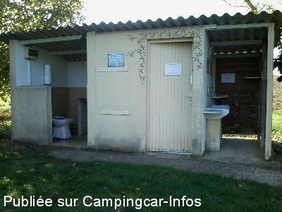

ASN = Aire de services avec stationnement nuit possible de :
CONDOM
(N° 339)
Accès/adresse :
Route de Nérac, D930
Ferme de Parette
32100 CONDOM
Ferme de Parette
32100 CONDOM
Latitude : (Nord) 43.98697° Décimaux ou 43° 59′ 13′′
Longitude : (Est) 0.34934° Décimaux ou 0° 20′ 57′′
Tarif : 2015
Stationnement, services, 2 personnes : 6 €
Personne en + : 1 € maximum 2 personnes
Électricité : 4 €
Eau : 5 €
Vidange k7 : 5 €
Vidange eaux grises : 5 €
Lave-linge : 4 €
Type de borne : Autre
Services :


Possibilité repas
Douche chaude
Tous commerces
Autres informations :
Ouvert toute l'année
10 emplacements
Aire privée de Mme Dupuy
Tel : +33(0)562 281 939
fermedeparette@gmail.com
http://www.fermedeparette.com

Le 16/11/2015 par cobemalo33
Le 16/11/2015 par cobemalo33
Le 21/07/2011 par Yolanda
Le 21/07/2011 par Yolanda
Le 19/10/2007 par aujeni
de
cobemalo
le 01/11/2015 :
§ De passage en octobre 2015, 2 personnes avec services pour 10€, endroit agréable; de nouveaux tarifs seront appliqués en 2016
§ De passage en octobre 2015, 2 personnes avec services pour 10€, endroit agréable; de nouveaux tarifs seront appliqués en 2016
de
bartoletti
le 16/11/2012 :
notre séjour à la ferme parette au mois d'octobre trés agréable.Super bonne la garbures maison de Denise.superbe emplacement.
notre séjour à la ferme parette au mois d'octobre trés agréable.Super bonne la garbures maison de Denise.superbe emplacement.
de
explorateur
le 28/08/2012 :
notre séjour à la ferme Parrette ce mois d'août a été des plus agréables. Les infrastructures sont plus que suffisantes et l'accueil de Denise et sa famille est très chaleureux. Les légumes et autres produits de la ferme sont à consommér sans modération. C'est un petit coin très agréable, calme, géré par des personnes très sympathiques. Un grand merci pour ces quelques jours.
notre séjour à la ferme Parrette ce mois d'août a été des plus agréables. Les infrastructures sont plus que suffisantes et l'accueil de Denise et sa famille est très chaleureux. Les légumes et autres produits de la ferme sont à consommér sans modération. C'est un petit coin très agréable, calme, géré par des personnes très sympathiques. Un grand merci pour ces quelques jours.
de
DAURE Jean-Pierre
le 16/08/2011 :
Aménagements très insuffisants (rideau pour séparer l'unique wc et la douche du local machine à laver!).Impossible de vider la cassette wc si quelqu'un lave sa vaisselle!
Aménagements très insuffisants (rideau pour séparer l'unique wc et la douche du local machine à laver!).Impossible de vider la cassette wc si quelqu'un lave sa vaisselle!
de
philb01
le 15/08/2011 :
Une aire d'accueil idéale ou tout les services sont présents. Des produits de trés grandes qualité sont proposés par les proprios. N'hesitez pas a déguster!!
Pour les amoureux de la nature.
Une aire d'accueil idéale ou tout les services sont présents. Des produits de trés grandes qualité sont proposés par les proprios. N'hesitez pas a déguster!!
Pour les amoureux de la nature.
de
Yolanda
le 21/07/2011 :
Área estupenda y cómoda. Denise, que habla español perfectamente, te hace la estancia super agradable. Hay lavadoras y duchas. Es un área estupenda para conocer Condom y la zona, comprar Armagnac y descansar en pleno campo. Todas las mañanas Denise recoge las hortalizas de su huerto, por lo que puedes comprarle las hortalizas recién recogidas para la ensalada o la verdura del día. Recomendable cien por cien.
Área estupenda y cómoda. Denise, que habla español perfectamente, te hace la estancia super agradable. Hay lavadoras y duchas. Es un área estupenda para conocer Condom y la zona, comprar Armagnac y descansar en pleno campo. Todas las mañanas Denise recoge las hortalizas de su huerto, por lo que puedes comprarle las hortalizas recién recogidas para la ensalada o la verdura del día. Recomendable cien por cien.
de
f claus
le 09/04/2011 :
Très agréable. rien à rajouter aux commentaires précédents sauf que attention, certains GPS (tom tom) écrivent Parrète alors que le nom officiel est Parette. Denise, quant à elle, a toujours écrit Parrette
Très agréable. rien à rajouter aux commentaires précédents sauf que attention, certains GPS (tom tom) écrivent Parrète alors que le nom officiel est Parette. Denise, quant à elle, a toujours écrit Parrette
de
Franck et Coco
le 29/06/2009 :
Nous y avons dormis une nuit de juin, très bon accueil ! Toilettes, douches chaudes, terrain très propre et calme. Nous reviendrons très vite, idéal quoi !
Nous y avons dormis une nuit de juin, très bon accueil ! Toilettes, douches chaudes, terrain très propre et calme. Nous reviendrons très vite, idéal quoi !
de
BSN 64
le 18/01/2009 :
Passé ce WE, accueil très agréable , Calme et repos, petits plats excellents . A retenir.
Passé ce WE, accueil très agréable , Calme et repos, petits plats excellents . A retenir.
de
lemidou
le 07/07/2008 :
Aire très, très agréable, ambiance très sympathique, sur un tapis d'herbe, nous n'hésiterons pas à faire le détour pour y retourner (sans oublier foie gras et confit).
Aire très, très agréable, ambiance très sympathique, sur un tapis d'herbe, nous n'hésiterons pas à faire le détour pour y retourner (sans oublier foie gras et confit).
de
Claude et Ghislaine
le 01/09/2007 :
Nous nous sommes arrêtés pour y passer la nuit, mais, suite à des problèmes de santé, nous y sommes restés une semaine. L'accueil est formidable, l'endroit calme et beau. Le site est à recommander, les produits excellents et pour 5 € la nuit + 3 € l'électricité (facultatif) nous avons douches chaudes, bac pour la vaisselle et bac pour laver le linge. Nous remercions Mme Dupuy (la propriétaire), sa fille, son gendre et la dame qui était en caravane pour toute l'aide qu'ils nous ont apporté lors de cette épreuve. Egalement un grand merci au médecin. Nous y retournerons.
Nous nous sommes arrêtés pour y passer la nuit, mais, suite à des problèmes de santé, nous y sommes restés une semaine. L'accueil est formidable, l'endroit calme et beau. Le site est à recommander, les produits excellents et pour 5 € la nuit + 3 € l'électricité (facultatif) nous avons douches chaudes, bac pour la vaisselle et bac pour laver le linge. Nous remercions Mme Dupuy (la propriétaire), sa fille, son gendre et la dame qui était en caravane pour toute l'aide qu'ils nous ont apporté lors de cette épreuve. Egalement un grand merci au médecin. Nous y retournerons.
de
Gibus 33
le 16/04/2007 :
Nous avons passé une nuit au calme en pleine campagne, bercés par le chant des grenouille. Merci pour cette bonne Halte. 5€, douche chaude, très bon acceuil.
Nous avons passé une nuit au calme en pleine campagne, bercés par le chant des grenouille. Merci pour cette bonne Halte. 5€, douche chaude, très bon acceuil.
de
fournier
le 07/01/2007 :
Un endroit super, un accueil formidable, DENISE et ELIANE sans oublier WILLY. De passage en novembre 2006, il y faisait doux, les habitants sont chaleureux.
Un endroit super, un accueil formidable, DENISE et ELIANE sans oublier WILLY. De passage en novembre 2006, il y faisait doux, les habitants sont chaleureux.